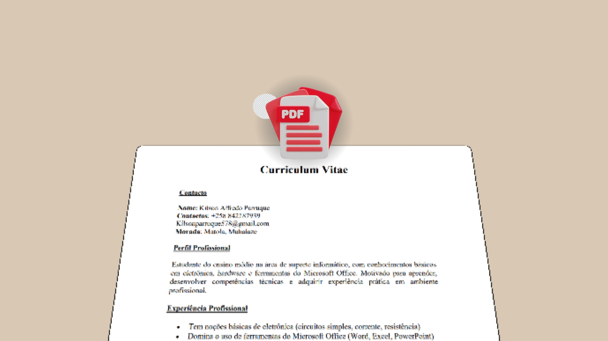
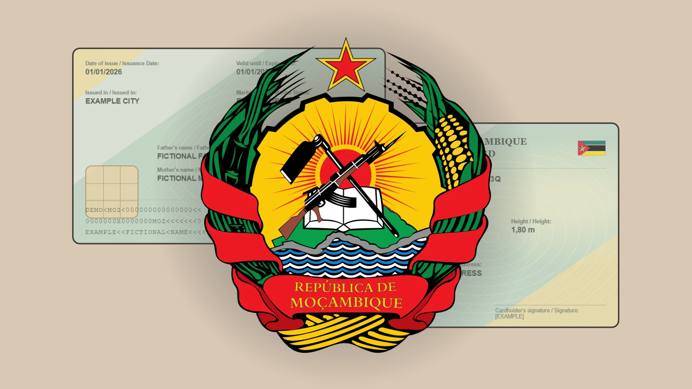
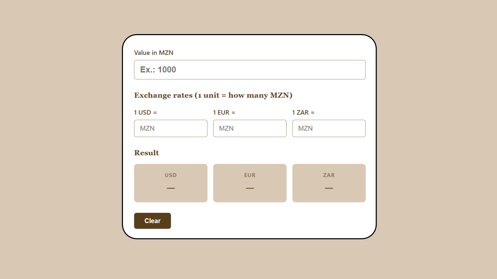

Curriculum Vitae
O meu CV hospedado em página web, permitindo visualizar e fazer download. Feito só com HTML e CSS.
HTML CSS
Ver projectoOlá, eu sou o
Técnico de Suporte Informático | Desenvolvedor Web Jr
Estudante do ITC, em Moçambique, a construir o caminho na área de tecnologia.
Ver projectosSou o Kilson, um jovem programador de Moçambique. Sou pragmático, gosto de coisas simples que funcionam e sou apaixonado por tecnologia.
Estudo Técnico de Suporte Informático (CV4) no Instituto de Transportes e Comunicações (ITC) e estou a dar os primeiros passos no desenvolvimento web. Ainda não tenho estágios, mas tenho vontade de aprender e de construir.
| Habilidade | Nível |
|---|---|
| HTML | Básico |
| CSS | Básico |
| Git | Básico |
| Windows | Básico |
| Redes | Básico |
| Montagem de PCs | Básico |
| Office | Intermédio |

O meu CV hospedado em página web, permitindo visualizar e fazer download. Feito só com HTML e CSS.
HTML CSS
Ver projectoCartão interactivo de frente e verso que vira ao passar o cursor, com a minha foto, curso e contactos. Feito só com HTML e CSS.
HTML CSS
Ver projecto
Bilhete de Identadade interactivo de frente e verso que vira ao passar o cursor, com a minha foto e dados ficticios. Feito só com HTML e CSS.
HTML CSS
Ver projecto
Calculadora de cambio digital que permite converter valores entre diferentes moedas. Feito só com HTML e CSS.
HTML CSS
Ver projectoEmail: kilsonparruque@gmail.com
Telefone: +258 84 218 7939
WhatsApp: Enviar mensagem
Localização: Moçambique